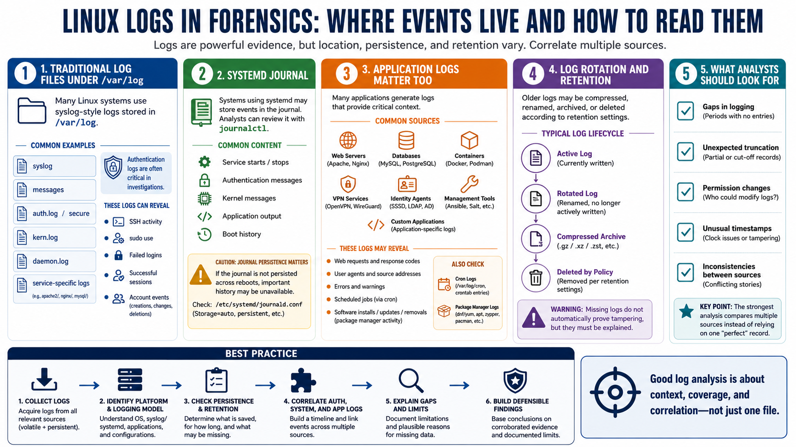

Logs and Event Sources
Connecting to LMS... Progress: in progress

Narration
Logs are central to Linux forensics, but their location and completeness vary. Traditional syslog-style files may appear under /var/log, with files such as syslog, messages, auth.log, secure, kern.log, daemon.log, and service-specific logs depending on the distribution. Authentication logs are often critical because they can show SSH activity, sudo use, failed logins, successful sessions, and account-related events.
Systems that use systemd may also store events in the systemd journal. The journal can be reviewed with journalctl, and it may contain service starts, authentication messages, kernel messages, application output, and boot history. Analysts should understand whether the journal is persistent or volatile on the system being examined. If journal data is not persisted across reboots, important history may be unavailable.
Application logs can be just as important as operating system logs. Web servers may record requests, response codes, user agents, source addresses, and errors. Databases, containers, VPN services, identity agents, management tools, and custom applications may all keep their own records. Cron logs may reveal scheduled job activity. Package manager logs may show software installation, updates, or removal.
Log rotation matters because older logs may be compressed, renamed, archived, or deleted according to retention settings. Missing logs do not automatically prove tampering, but they are worth explaining. Analysts should note gaps, unexpected truncation, permission changes, unusual timestamps, and inconsistencies between sources. The strongest log analysis compares multiple sources instead of relying on one perfect record that may not exist.